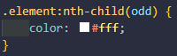

What is it?
CSS is a kind of language that allows to define and create the visual presentation of a document already structurated and writed in HTML. Defining colors, sizes, fonts, positions and more features that improve the user experience.
Origin
CSS was created by the Norwegian HÃ¥kon Wium Lie to allow web designers to change the layout, colors, and fonts of their websites. Originally, websites were meant to be used by researchers only, so the decoration did not matter. However, when websites became widespread, the need to make them look nice grew.
Selectors
global

The style is applied to every element in the HTML.
markup
The style is applied to every element in the HTML with the same markup.
class

The style applies to the elements with the class specified.
id
The style applies to the elements with the ID specified.
Specificity
It's the way that the browsers have to decide which values of a CSS property are more relevant to an element, and therefore will be applied. It's based in the coincidence rules that are conformed by diferent kinds of CSS selectors.
Pseudo-class
It's a keyword added to the selector and specifies a special state of the selected element.
Here we explain the four principal pseudo-classes:
The style is applied when the mouse hovered it

The style applies when the element is clicked
It works when the user clicks on an input
The style is added to the elements in the list that are selected
Animations
CSS animations make it possible to animate transitions from one CSS style configuration to another. Animations consist of two components: the propierty 'animation' describing the CSS animation and a set of keyframes that indicate the start and end of the states of the element, as well as possible intermediate waypoints.
Custom Properties or Variables
Custom properties (sometimes referred to as CSS variables or cascading variables) are entities defined by CSS authors that represent specific values to be reused throughout a document.
Complex websites have very large amounts of CSS, and this often results in a lot of repeated CSS values. Custom properties allow a value to be defined in one place, then referenced in multiple other places so that it's easier to work with.
In CSS, you can declare a custom property using two dashes (--) as a prefix for the property name, or by using the "@property" at-rule.